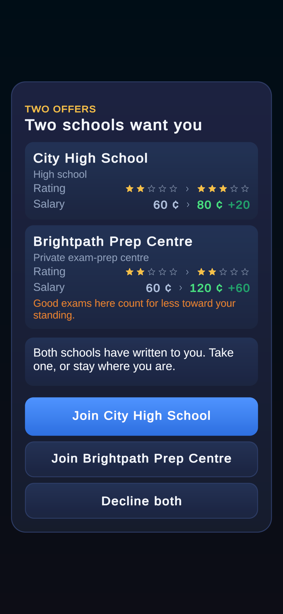

Two schools at once
- Two offers arrive on one card, as one decision. The player takes one school or declines both, so taking one can never leave the other open.
- The second school is rated lower and pays more. It appears beside a promotion only when such a school is open to the player: City High (better rated) against Brightpath (better paid).
- How often: about one card in fourteen in a careful career.
- The cost of the money is printed on the card, not hidden in the rules.
- Without a banner. The comparison stands in for the picture, so the three answers fit on the screen.